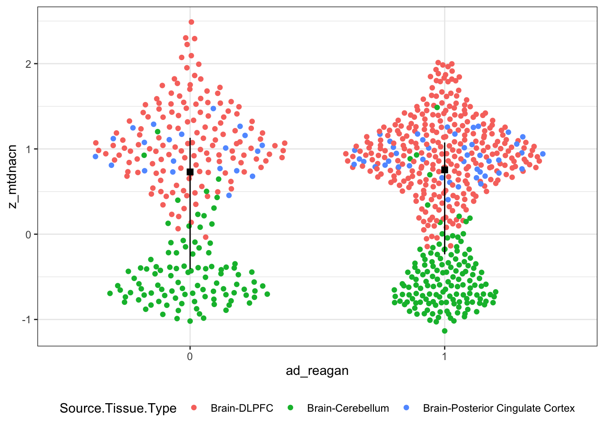

6.1 ROSMAP
6.1.1 mtDNAcn
6.1.1.1 Data Wrangling
- DNA isolated from Brain tissue
- DLPFC, Posterior Cingulate Cortex, Cerebellum
- European Haplogroups only
- H, V, J, T, U, K, I, W, X
- For clinical diagnosis, exclude MCI, AD possible, other dementia
rosmap_df <- rosmap %>%
filter(Source.Tissue.Type %in% c("Brain-DLPFC", "Brain-Posterior Cingulate Cortex", "Brain-Cerebellum", "Whole Blood")) %>%
filter(organ == 'brain') %>%
filter(macro %in% c('H', 'V', 'J', 'T', 'U', 'K', 'I', 'W', 'X')) %>%
filter(!is.na(macro)) %>%
mutate(ad_reagan = fct_relevel(ad_reagan, "0", "1"),
Source.Tissue.Type = fct_inorder(Source.Tissue.Type),
dx = fct_recode(dcfdx_lv, "0" = "1", NULL = "2", NULL = "3", "1" = "4", NULL = "5", NULL = "6")) 6.1.1.2 NIA-Reagan Diagnosis
rosmap_path_res <- glm(ad_reagan ~ z_mtdnacn + macro + age_death + msex + apoe4 + study + Source.Tissue.Type,
family = "binomial", data = rosmap_df)| term | estimate | std.error | statistic | p.value |
|---|---|---|---|---|
| (Intercept) | -5.864 | 1.256 | -4.670 | 3.0e-06 *** |
| z_mtdnacn | -0.458 | 0.197 | -2.320 | 0.02 * |
| macroI | -0.031 | 0.455 | -0.068 | 0.946 |
| macroJ | 0.697 | 0.337 | 2.071 | 0.038 * |
| macroK | 0.111 | 0.327 | 0.340 | 0.734 |
| macroT | 0.153 | 0.289 | 0.529 | 0.597 |
| macroU | 0.015 | 0.238 | 0.064 | 0.949 |
| macroV | 0.344 | 0.405 | 0.850 | 0.396 |
| macroW | -0.087 | 0.634 | -0.138 | 0.89 |
| macroX | 0.368 | 0.717 | 0.514 | 0.608 |
| age_death | 0.076 | 0.013 | 5.624 | 1.9e-08 *** |
| msexM | -0.330 | 0.175 | -1.887 | 0.059 . |
| apoe4e4+ | 1.416 | 0.223 | 6.357 | 2.1e-10 *** |
| studyROS | 0.050 | 0.171 | 0.294 | 0.768 |
| Source.Tissue.TypeBrain-Cerebellum | -1.013 | 0.348 | -2.909 | 0.004 ** |
| Source.Tissue.TypeBrain-Posterior Cingulate Cortex | -0.076 | 0.304 | -0.250 | 0.802 |
ggplot(rosmap_df, aes(x = ad_reagan, y = z_mtdnacn, colour = Source.Tissue.Type)) +
geom_quasirandom() +
geom_pointrange(mapping = aes(x = ad_reagan, y = z_mtdnacn),
show.legend = F, colour = 'black',
# size = 1,
position = position_dodge(width = 1),
shape = 15,
stat = "summary",
fun = median,
fun.min = function(z) {quantile(z,0.25)},
fun.max = function(z) {quantile(z,0.75)}) +
theme_bw() + theme(legend.position = "bottom")
6.1.1.3 Clinical diagnosis
| term | estimate | std.error | statistic | p.value |
|---|---|---|---|---|
| (Intercept) | -9.890 | 1.591 | -6.215 | 5.1e-10 *** |
| z_mtdnacn | -0.453 | 0.248 | -1.829 | 0.067 . |
| macroI | 0.340 | 0.596 | 0.571 | 0.568 |
| macroJ | 0.092 | 0.396 | 0.233 | 0.816 |
| macroK | 0.991 | 0.437 | 2.266 | 0.023 * |
| macroT | -0.030 | 0.333 | -0.091 | 0.928 |
| macroU | 0.340 | 0.283 | 1.202 | 0.23 |
| macroV | 0.502 | 0.483 | 1.039 | 0.299 |
| macroW | 0.595 | 0.733 | 0.812 | 0.417 |
| macroX | -0.590 | 0.734 | -0.804 | 0.421 |
| age_death | 0.110 | 0.017 | 6.479 | 9.3e-11 *** |
| msexM | -0.081 | 0.213 | -0.379 | 0.704 |
| apoe4e4+ | 1.429 | 0.243 | 5.881 | 4.1e-09 *** |
| studyROS | 0.275 | 0.208 | 1.322 | 0.186 |
| Source.Tissue.TypeBrain-Cerebellum | -0.426 | 0.417 | -1.023 | 0.306 |
| Source.Tissue.TypeBrain-Posterior Cingulate Cortex | 0.003 | 0.360 | 0.008 | 0.994 |
rosmap_df %>%
filter(!is.na(dx)) %>%
ggplot(., aes(x = dx, y = z_mtdnacn, colour = Source.Tissue.Type)) +
geom_quasirandom() +
geom_pointrange(mapping = aes(x = dx, y = z_mtdnacn),
show.legend = F, colour = 'black',
# size = 1,
position = position_dodge(width = 1),
shape = 15,
stat = "summary",
fun = median,
fun.min = function(z) {quantile(z,0.25)},
fun.max = function(z) {quantile(z,0.75)}) +
theme_bw() + theme(legend.position = "bottom")
lm(sqrt(gpath) ~ z_mtdnacn + macro + age_death + msex + apoe4 + study + Source.Tissue.Type, data = rosmap_df) %>%
tidy(.)## # A tibble: 16 x 5
## term estimate std.error statistic p.value
## <chr> <dbl> <dbl> <dbl> <dbl>
## 1 (Intercept) 0.0401 0.195 0.206 8.37e- 1
## 2 z_mtdnacn -0.112 0.0317 -3.55 4.12e- 4
## 3 macroI 0.0248 0.0735 0.337 7.36e- 1
## 4 macroJ 0.129 0.0500 2.58 1.01e- 2
## 5 macroK 0.0604 0.0525 1.15 2.50e- 1
## 6 macroT 0.00335 0.0461 0.0728 9.42e- 1
## 7 macroU -0.0261 0.0389 -0.672 5.02e- 1
## 8 macroV 0.0752 0.0626 1.20 2.30e- 1
## 9 macroW 0.0501 0.106 0.471 6.38e- 1
## 10 macroX 0.120 0.111 1.08 2.82e- 1
## 11 age_death 0.00940 0.00207 4.54 6.61e- 6
## 12 msexM -0.115 0.0285 -4.04 5.95e- 5
## 13 apoe4e4+ 0.314 0.0308 10.2 6.15e-23
## 14 studyROS -0.0109 0.0273 -0.399 6.90e- 1
## 15 Source.Tissue.TypeBrain-Cerebellum -0.263 0.0554 -4.75 2.46e- 6
## 16 Source.Tissue.TypeBrain-Posterior Cing… -0.0504 0.0483 -1.04 2.98e- 1lm(sqrt(amyloid) ~ z_mtdnacn + macro + age_death + msex + apoe4 + study + Source.Tissue.Type, data = rosmap_df) %>%
tidy(.)## # A tibble: 16 x 5
## term estimate std.error statistic p.value
## <chr> <dbl> <dbl> <dbl> <dbl>
## 1 (Intercept) -0.469 0.572 -0.819 4.13e- 1
## 2 z_mtdnacn -0.124 0.0927 -1.34 1.80e- 1
## 3 macroI 0.110 0.215 0.511 6.10e- 1
## 4 macroJ 0.322 0.147 2.18 2.92e- 2
## 5 macroK -0.0180 0.154 -0.117 9.07e- 1
## 6 macroT 0.0494 0.135 0.364 7.16e- 1
## 7 macroU 0.0504 0.114 0.443 6.58e- 1
## 8 macroV 0.165 0.183 0.903 3.67e- 1
## 9 macroW -0.349 0.311 -1.12 2.63e- 1
## 10 macroX 0.0498 0.325 0.153 8.78e- 1
## 11 age_death 0.0272 0.00609 4.47 8.89e- 6
## 12 msexM -0.180 0.0835 -2.16 3.09e- 2
## 13 apoe4e4+ 0.761 0.0902 8.43 1.82e-16
## 14 studyROS -0.440 0.0799 -5.51 5.00e- 8
## 15 Source.Tissue.TypeBrain-Cerebellum -0.408 0.162 -2.52 1.21e- 2
## 16 Source.Tissue.TypeBrain-Posterior Cing… -0.158 0.141 -1.11 2.66e- 1lm(sqrt(tangles) ~ z_mtdnacn + macro + age_death + msex + apoe4 + study + Source.Tissue.Type, data = rosmap_df) %>%
tidy(.)## # A tibble: 16 x 5
## term estimate std.error statistic p.value
## <chr> <dbl> <dbl> <dbl> <dbl>
## 1 (Intercept) -0.442 0.663 -0.666 5.05e- 1
## 2 z_mtdnacn -0.288 0.107 -2.68 7.61e- 3
## 3 macroI 0.207 0.249 0.830 4.07e- 1
## 4 macroJ 0.465 0.171 2.72 6.60e- 3
## 5 macroK 0.354 0.178 1.99 4.68e- 2
## 6 macroT 0.130 0.157 0.827 4.08e- 1
## 7 macroU 0.0470 0.132 0.357 7.21e- 1
## 8 macroV 0.252 0.212 1.19 2.36e- 1
## 9 macroW 0.744 0.361 2.07 3.93e- 2
## 10 macroX -0.169 0.377 -0.449 6.54e- 1
## 11 age_death 0.0333 0.00706 4.72 2.83e- 6
## 12 msexM -0.498 0.0967 -5.15 3.33e- 7
## 13 apoe4e4+ 0.886 0.105 8.47 1.35e-16
## 14 studyROS -0.144 0.0927 -1.55 1.22e- 1
## 15 Source.Tissue.TypeBrain-Cerebellum -0.605 0.188 -3.21 1.37e- 3
## 16 Source.Tissue.TypeBrain-Posterior Cing… -0.239 0.164 -1.46 1.46e- 16.1.2 haplogroups
rosmap_hap <- rosmap %>%
filter(Source.Tissue.Type %in% c("Brain-DLPFC", "Brain-Posterior Cingulate Cortex", "Brain-Cerebellum", "Whole Blood")) %>%
filter(macro %in% c('H', 'V', 'J', 'T', 'U', 'K', 'I', 'W', 'X')) %>%
filter(!is.na(macro)) %>%
mutate(ad_reagan = fct_relevel(ad_reagan, "0", "1"),
Source.Tissue.Type = fct_inorder(Source.Tissue.Type),
dx = fct_recode(dcfdx_lv, "0" = "1", NULL = "2", NULL = "3", "1" = "4", NULL = "5", NULL = "6")) glm(ad_reagan ~ macro + age_death + msex + apoe4 + study + Source.Tissue.Type,
family = "binomial", data = rosmap_hap) %>%
tidy()## # A tibble: 16 x 5
## term estimate std.error statistic p.value
## <chr> <dbl> <dbl> <dbl> <dbl>
## 1 (Intercept) -6.20 1.02 -6.10 1.06e- 9
## 2 macroI -0.160 0.371 -0.432 6.66e- 1
## 3 macroJ 0.223 0.249 0.897 3.70e- 1
## 4 macroK 0.260 0.280 0.928 3.53e- 1
## 5 macroT 0.106 0.239 0.445 6.56e- 1
## 6 macroU -0.0440 0.190 -0.231 8.17e- 1
## 7 macroV 0.214 0.336 0.639 5.23e- 1
## 8 macroW 0.177 0.539 0.328 7.43e- 1
## 9 macroX -0.193 0.484 -0.399 6.90e- 1
## 10 age_death 0.0748 0.0111 6.76 1.38e-11
## 11 msexM -0.285 0.142 -2.00 4.54e- 2
## 12 apoe4e4+ 1.34 0.176 7.64 2.11e-14
## 13 studyROS 0.0838 0.138 0.607 5.44e- 1
## 14 Source.Tissue.TypeWhole Blood -0.322 0.161 -2.01 4.46e- 2
## 15 Source.Tissue.TypeBrain-Cerebellum -0.325 0.177 -1.83 6.73e- 2
## 16 Source.Tissue.TypeBrain-Posterior Cing… -0.0498 0.300 -0.166 8.68e- 1glm(dx ~ macro + age_death + msex + apoe4 + study + Source.Tissue.Type,
family = "binomial", data = rosmap_hap) %>%
tidy()## # A tibble: 16 x 5
## term estimate std.error statistic p.value
## <chr> <dbl> <dbl> <dbl> <dbl>
## 1 (Intercept) -9.87 1.29 -7.67 1.66e-14
## 2 macroI 0.0147 0.498 0.0294 9.77e- 1
## 3 macroJ -0.118 0.304 -0.387 6.99e- 1
## 4 macroK 0.449 0.334 1.35 1.78e- 1
## 5 macroT -0.0977 0.281 -0.348 7.28e- 1
## 6 macroU 0.344 0.228 1.51 1.30e- 1
## 7 macroV 0.0734 0.396 0.185 8.53e- 1
## 8 macroW 0.599 0.634 0.944 3.45e- 1
## 9 macroX -1.01 0.655 -1.55 1.22e- 1
## 10 age_death 0.105 0.0138 7.60 2.95e-14
## 11 msexM -0.0478 0.174 -0.275 7.83e- 1
## 12 apoe4e4+ 1.39 0.195 7.09 1.30e-12
## 13 studyROS 0.432 0.169 2.55 1.07e- 2
## 14 Source.Tissue.TypeWhole Blood -0.282 0.196 -1.44 1.49e- 1
## 15 Source.Tissue.TypeBrain-Cerebellum 0.233 0.212 1.10 2.73e- 1
## 16 Source.Tissue.TypeBrain-Posterior Cing… 0.00701 0.354 0.0198 9.84e- 1## # A tibble: 13 x 5
## term estimate std.error statistic p.value
## <chr> <dbl> <dbl> <dbl> <dbl>
## 1 (Intercept) -0.165 0.161 -1.03 3.05e- 1
## 2 macroI 0.00116 0.0622 0.0186 9.85e- 1
## 3 macroJ 0.0615 0.0407 1.51 1.31e- 1
## 4 macroK 0.0871 0.0455 1.92 5.56e- 2
## 5 macroT -0.00994 0.0392 -0.254 8.00e- 1
## 6 macroU -0.00645 0.0318 -0.203 8.39e- 1
## 7 macroV 0.0281 0.0542 0.519 6.04e- 1
## 8 macroW -0.00719 0.0902 -0.0797 9.37e- 1
## 9 macroX -0.0861 0.0835 -1.03 3.03e- 1
## 10 age_death 0.00991 0.00175 5.67 1.79e- 8
## 11 msexM -0.109 0.0239 -4.56 5.73e- 6
## 12 apoe4e4+ 0.330 0.0255 12.9 1.24e-35
## 13 studyROS -0.00618 0.0225 -0.275 7.84e- 1## # A tibble: 13 x 5
## term estimate std.error statistic p.value
## <chr> <dbl> <dbl> <dbl> <dbl>
## 1 (Intercept) -1.13 0.470 -2.40 1.67e- 2
## 2 macroI -0.0151 0.181 -0.0834 9.34e- 1
## 3 macroJ 0.178 0.120 1.49 1.38e- 1
## 4 macroK 0.0725 0.132 0.548 5.84e- 1
## 5 macroT 0.0159 0.115 0.139 8.90e- 1
## 6 macroU 0.00528 0.0928 0.0569 9.55e- 1
## 7 macroV 0.141 0.158 0.891 3.73e- 1
## 8 macroW -0.461 0.263 -1.76 7.95e- 2
## 9 macroX -0.194 0.249 -0.780 4.36e- 1
## 10 age_death 0.0319 0.00511 6.25 5.91e-10
## 11 msexM -0.166 0.0699 -2.37 1.80e- 2
## 12 apoe4e4+ 0.778 0.0746 10.4 2.35e-24
## 13 studyROS -0.341 0.0656 -5.19 2.48e- 7## # A tibble: 13 x 5
## term estimate std.error statistic p.value
## <chr> <dbl> <dbl> <dbl> <dbl>
## 1 (Intercept) -0.313 0.173 -1.81 7.08e- 2
## 2 macroI -0.0256 0.0670 -0.381 7.03e- 1
## 3 macroJ 0.0508 0.0438 1.16 2.47e- 1
## 4 macroK 0.0908 0.0490 1.85 6.39e- 2
## 5 macroT -0.00885 0.0422 -0.210 8.34e- 1
## 6 macroU -0.00586 0.0343 -0.171 8.64e- 1
## 7 macroV 0.0646 0.0584 1.11 2.69e- 1
## 8 macroW 0.109 0.0972 1.12 2.62e- 1
## 9 macroX -0.0943 0.0899 -1.05 2.95e- 1
## 10 age_death 0.0112 0.00188 5.93 3.98e- 9
## 11 msexM -0.146 0.0258 -5.66 1.95e- 8
## 12 apoe4e4+ 0.263 0.0275 9.58 6.31e-21
## 13 studyROS -0.0390 0.0242 -1.61 1.08e- 1## # A tibble: 13 x 5
## term estimate std.error statistic p.value
## <chr> <dbl> <dbl> <dbl> <dbl>
## 1 (Intercept) 49.7 3.83 13.0 7.21e-36
## 2 macroI 1.72 1.49 1.16 2.47e- 1
## 3 macroJ -0.110 0.971 -0.113 9.10e- 1
## 4 macroK -1.32 1.09 -1.21 2.25e- 1
## 5 macroT 0.349 0.936 0.373 7.09e- 1
## 6 macroU -1.15 0.760 -1.51 1.31e- 1
## 7 macroV -1.03 1.29 -0.794 4.28e- 1
## 8 macroW -5.26 2.15 -2.44 1.47e- 2
## 9 macroX 2.23 1.99 1.12 2.64e- 1
## 10 age_death -0.303 0.0417 -7.27 6.81e-13
## 11 msexM 0.882 0.571 1.54 1.23e- 1
## 12 apoe4e4+ -4.76 0.609 -7.82 1.26e-14
## 13 studyROS -1.22 0.537 -2.27 2.34e- 2